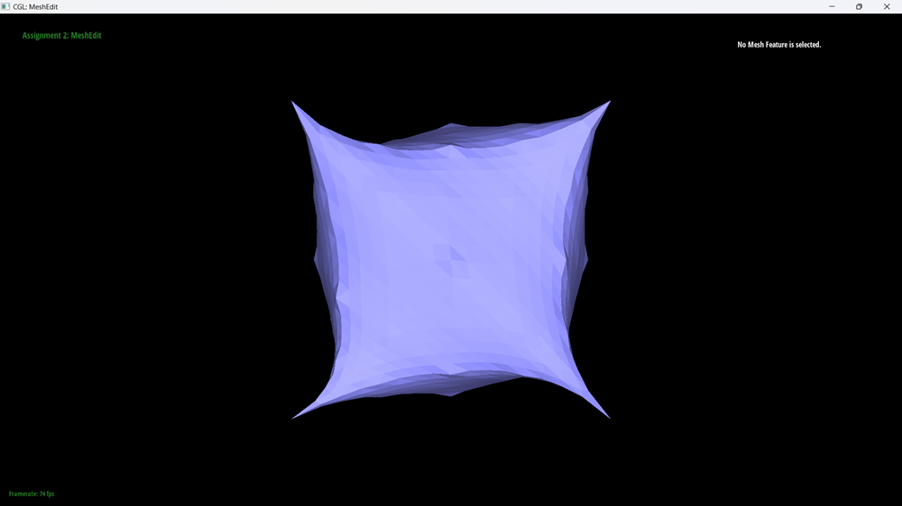

In this assignment, we implement various algorithms involved in rendering meshes. We first begin by implmenting one dimensional de Casteljau's algorithm to model Bezier curves. From there we use this algorithm to extend to three dimensional space and fully render three dimensional mesh objects. From there we move on to working with triangle meshes and the halfedge data structure, with the goal of upsampling our meshes to make them smoother as well as introduce better shading techniques. Our first improvment to our mesh rendering is with area-weighted vertex normals to implement Phong shading. Then we implement the edge flip and edge split operations to enable us to upsample our meshes with the loop subdivision algorithm. This lets us create the prettiest meshes possible :) .
De Casteljiau's algorithm allows us to evalutate Bezier curves. Given a set of control points, we linearly interpolate every consequtive pair by parameter t, which is the point on the curve we want to evaluate. This results in another set of control points. We repeate this reursivley until only a single point remains. This point is the point on the Bezier curve given by parameter t.


The algorithm we devleloped in Part 1 is also easily extended to three dimensional Bezier surfaces. Surfaces must be evaluated by two parameters (u,v) instead of one (t). So first we evaluate many bezier curves along the parameter u to evaluate a sort of plane. We then do a final evaluation of our algorithm along the v parameter, giving us a point on the surface of the object.
Here we use area-weighted vertex normals to implement Phong Shading. Given a vertex we wish to calculate the normal of in a halfedge mesh data structure, we first record our starting half edge. From there we traverse the vertices of the current face (call them A,B, and C) and calculate the surface normal by taking the cross product of the two vectors (B-A) and (C-A). We note that A is always the same in this calculation as it is the vertex we started on, while B and C change as we traverse the neighboring triangles. Once all the neighboring triangles normals have been calculated, we sum them together and then finally normalize to a unit vector, giving us the unit normal at our vertex. Below, the two pictures illustrate how much more smoothness this method produces in shading.
Here we implmented the edge flip mesh operation. This is done simply through a list of pointer reassignments on the appropriate halfedge data structures. Namely, enumerating all the edges, halfedges,faces, and vertices of the original mesh. Creating a new mesh based on the edge flip, then reassigning pointers to their appropriate place. At one point, I thought this would involve calling setNeighbors on new half edges, but this resulted in segmentation faults. I fixed this by instead using the original half edges and this resulted in proper edge flip behavior. The two pictures below illustrate the before and after of some edge flipping.
Much like Edge Flip, implementing relies on the same implementation principles, but this time we add new edges, faces, and a new vertex when we call an edge split. Again, we carefully reassign pointers to the proper places. I had gotten stuck as my Edge Split call would simply result in the program crashing with little information from the debugger. Using the CHECK_CLOSED debug function allowed me to discover that one of my pointers wasn't properly pointing to its next neighbor. The three pictures illustrate the original mesh, the mesh with split operations applied, and the mesh with both flip and split operations applied, respectivley.
Loop Subdivision involved using our functions from parts 3 and 4 to upsample our mesh. We did this by first preprocessing all the new vertex posistions in the mesh, both for what would be old and new vertices. A bug that popped up at this point involved Visual Studio automatically truncating integer division when I wanted a float. This resulted in vertex posistions becoming zeroed out or otherwise inccorect. This gave us empty looking meshes, or meshes with very pointy shapes. We then split every existing edge in the mesh using our method from part 4, and subsequently flipped all the newly created edges that resulted from this. At this point, I added a new field called flipNew to be used in addition with isNew to distnguish between new edges that needed to be flipped or not. Not doing this resulted in infinite loops. After all edges were flipped we then use our preprocessed vertex posistions to populate all vertices within the mesh. Giving us our upsampled mesh.
Here are some iterations of our Loop Subdivision Algorithm at work.
We see above that the mesh becomes more assymetrical as we apply more upsamples. This occurs because our algorithm is designed to interpolate the geometry of smooth surfaces. When it encounters geometry with sharp edges it attempts to smooth it, which creates the asymmetry we see.
We can attempt to fix this by pre-splitting to introduce more symmetry as we illustrate below.
This produces a much more symmetrical upsampled mesh, we love to see it. Also, just out of interesting it looks, below is an incredibly pointy mesh that was a bug from the floating point errors I mentioned earlier.
